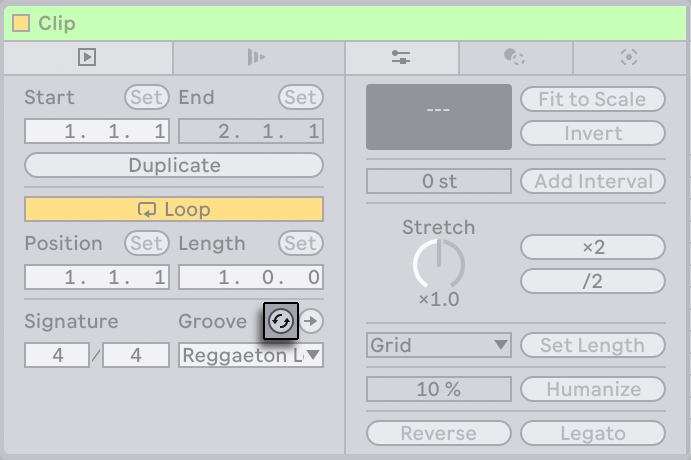
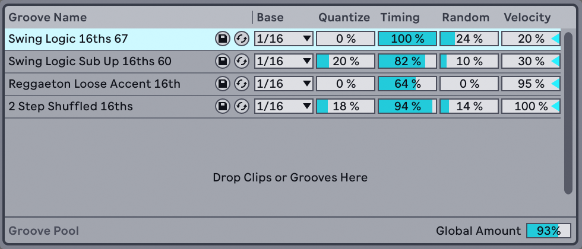

14. Using Grooves
The timing and “feel“ of each clip in your Set can be modified through the use of grooves. Live comes with a large selection of grooves, which appear as .agr files in the browser.

The easiest way to work with library grooves is to drag and drop them from the browser directly onto clips in your Set. This immediately applies the timing characteristics of the groove file to the clip. If you want to quickly try out a variety of grooves, you can enable the Hot-Swap button above a clip’s Clip Groove chooser and then step through the grooves in the browser while the clip plays.

Grooves can be applied to both audio and MIDI clips. In audio clips, grooves work by adjusting the clip’s warping behavior, and thus only work on clips with Warp enabled.
14.1 Groove Pool
Once you’ve applied a groove file, you can modify its behavior by adjusting its parameters in the Groove Pool, which can be opened or closed via drop-down menu entry in the browser view control or by using the shortcut CtrlAlt6 (Win) / CmdOption6 (Mac).

You can also double-click grooves in the browser to load them directly to the Groove Pool before applying them to a clip. The Groove Pool contains all grooves that have been loaded in this way or that are being used in clips. “Inactive“ grooves (those that are not being used by a clip) appear with their parameters grayed out.

14.1.1 Adjusting Groove Parameters
Grooves in the Groove Pool appear in a list, and offer a variety of parameters that can be modified in real time to adjust the behavior of any clips that are using them. You can also save and hot-swap grooves via the buttons next to the Groove’s name.
The Groove Pool’s controls work as follows:
- Base — The Base chooser determines the timing resolution against which the notes in the groove will be measured. A 1/4 Base, for example, means that the positions of the notes in the groove file are compared to the nearest quarter note, and all notes in any clips that are assigned to that groove will be moved proportionally towards the positions of the groove notes. At a base of 1/8th, the groove’s notes are measured from their nearest eighth note. Notes in the groove that fall exactly on the grid aren’t moved at all, so the corresponding notes in your clips will also not be moved.
- Quantize — adjusts the amount of “straight“ quantization that is applied before the groove is applied. At 100%, the notes in your clips will be snapped to the nearest note values, as selected in the Base chooser. At 0%, the notes in clips will not be moved from their original positions before the groove is applied.
- Timing — adjusts how much the groove pattern will affect any clips which are using it.
- Random — adjusts how much random timing fluctuation will be applied to clips using the selected groove. At low levels, this can be useful for adding subtle “humanization“ to highly quantized, electronic loops. Note that Random applies differing randomization to every voice in your clip, so notes that originally occurred together will now be randomly offset both from the grid and from each other.
- Velocity — adjusts how much the velocity of the notes in clips will be affected by the velocity information stored in the groove file. Note that this slider goes from -100 to +100. At negative values, the effect of the groove’s velocity will be reversed; loud notes will play quietly and vice versa.
- Global Amount — this parameter scales the overall intensity of Timing, Random and Velocity for all of the available groove files. At 100%, the parameters will be applied at their assigned values. Note that the Amount slider goes up to 130%, which allows for even more exaggerated groove effects. If grooves are applied to clips in your Set, the Global Amount slider will also appear in Live’s Control Bar.
14.1.2 Committing Grooves

Pressing the Commit button above the Clip Groove chooser “writes“ your groove parameters to the clip. For MIDI clips, this moves the notes accordingly. For audio clips, this creates Warp Markers at the appropriate positions in the clip.
After pressing Commit, the clip’s Groove chooser selection is automatically set to None.
14.2 Editing Grooves
The effect that groove files have on your clips is a combination of two factors: the parameter settings made in the Groove Pool and the positions of the notes in the groove files themselves. To edit the contents of groove files directly, drag and drop them from the browser or Groove Pool into a MIDI track. This will create a new MIDI clip, which you can then edit, as you would with any other MIDI clip. You can then convert the edited clip back into a groove, via the process below.
14.2.1 Extracting Grooves
The timing and volume information from any audio or MIDI clip can be extracted to create a new groove. You can do this by dragging the clip to the Groove Pool or via the Extract Groove command in the clip’s context menu.

Grooves created by extracting will only consider the material in the playing portion of the clip.
14.3 Groove Tips
This section presents some tips for getting the most out of grooves.
14.3.1 Grooving a Single Voice
Drummers will often use variations in the timing of particular instruments in order to create a convincing beat. For example, playing hi-hats in time but placing snare hits slightly behind the beat is a good way of creating a laid-back feel. But because groove files apply to an entire clip at once, this kind of subtlety can be difficult to achieve with a single clip. Provided your clip uses a Drum or Instrument Rack, one solution can be to extract the chain containing the voice that you want to independently groove. In this example, we’d extract the snare chain, creating a new clip and track that contained only the snare notes. Then we could apply a different groove to this new clip.
14.3.2 Non-Destructive Quantization
Grooves can be used to apply real-time, non-destructive quantization to clips. To do this, simply set the groove’s Timing, Random and Velocity amounts to 0% and adjust its Quantize and Base parameters to taste. With only Quantize applied, the actual content of the groove is ignored, so this technique works the same regardless of which Groove file you use.
14.3.3 Creating Texture With Randomization
You can use a groove’s Random parameter to create realistic doublings. This can be particularly useful when creating string textures from single voices. To do this, first duplicate the track containing the clip that you want to “thicken.“ Then apply a groove to one of the clips and turn up its Random parameter. When you play the two clips together, each note will be slightly (and randomly) out of sync with its counterpart on the other track.